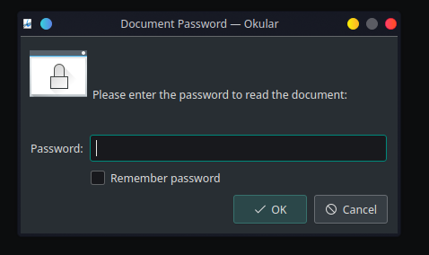

Welcome to my first real blog post on this site. As tax season sneaks up on us, I thought it would be a great idea to start getting all my resources ready to streamline the painful experience of doing my taxes. A quick search in my gmail results in me finding my paystub in a PDF file. All right, should be nice and easy...
Welp... what now... I could either call my employer and get the password from them on monday when their office is open, or... I could crack the password myself... Alright time to start cracking!
I first installed JohnTheRipper with: git clone https://github.com/magnumripper/JohnTheRipper.git
Then, I navigated to the directory I installed with: cd ./JohnTheRipper/src
And built it with: ./configure && make
For some reason, when I navigated to cd src, I did not find the script I needed, pdf2john.pl. Typing pdf2john in my terminal prompted
me to install it, and it works as intended after installing it.
Now, we have to generate a hash from the PDF so john has something to crack! For this example, I have downloaded a random pdf and set the password of
sample123 and sample123 for user and owner passwords respectively as I knew it was in the wordlist already. For my paystub, it took around an hour to crack the randomly generated password
that was set, as it was not contained in the wordlist, and had to be brute forced instead.
Now its time to generate this hash! We can type: pdf2john (path to pdf) > (path where you want hash saved)
In my case I typed: pdf2john ~/Desktop/dogpassword.pdf > ~/Desktop/dogpdf.hash
Now we have the hash of this PDF! Mine looks something like this: dogpassword.pdf:$pdf$5*6*256*-4*1*16*f2daf3da5cba4b8...
Now that we have this hash, we can start John!
The command we run is: john (path to hash
For me it was: john ~/Desktop/dogpdf.hash
This will use the default JohnTheRipper wordlist, but if you want to use your own wordlist, you could generate one and type:
john --wordlist=(path to wordlist) (path to hash)
And now we wait for John to crack our hash! Depending on the complexity and length of the password it could take a while. With sample123, it
took less than 10 seconds. You should see output similar to this:
As you can see, the password is displayed there. To display it more clearly, we can type: john --show --format=PDF (path to hash)
For me I typed: john --show --format=PDF ~/Desktop/dogpdf.hash
And get the output:
Now it is even easier to see the password of sample123. So lets test it!
Voila! We successfully cracked the password of our pdf!
Welp, that pretty much sums up my first real entry on this blog, I hope that it was either a good read or it helped you crack your PDF's password!